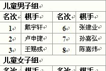

关于《五子茶刊》的一个问题
#1 关于《五子茶刊》的一个问题 作者：超级大大师 发表时间：2011-1-1 10:20:00

上面是《五子茶刊》第六页“2010战绩一览”中的第七届浙江公开赛的切图。
我们再看一下第七届浙江五子棋公开赛儿童男子组最终成绩表
1 戴宇轩, 8 48.0 39.0 8
2 卢申捷, 7.5 52.0 41.5 7
3 王赐彧, 7 54.5 43.0 7
4 张建业, 7 49.0 38.5 7
5 孙嘉弘, 7 45.5 35.0 7
6 陈嘉炜, 6 50.5 39.0 6
7 曾思耿, 6 50.5 38.5 6
8 李隽恒, 6 49.5 39.0 5
为什么上图中把我们这边第7和8名的曾思耿和李隽恒给踢掉了呢？
［ 掌棋宣传员 于 2011-1-1 20:40:12 时花20金币送鲜花一朵］
［ 掌棋宣传员 于 2011-1-1 20:40:15 时花20金币送鲜花一朵］
［ 虎哥 于 2011-1-2 0:29:49 时花20金币送鲜花一朵］
#2 Re:关于《五子茶刊》的一个问题 作者：雪飞 发表时间：2011-1-1 11:43:09
非常抱歉，编辑的时候出现了错误，限于篇幅，只选取了前六，名次右栏应该是4、5、6［ 掌棋宣传员 于 2011-1-1 20:40:25 时花20金币送鲜花一朵］
［ 虎哥 于 2011-1-2 0:29:36 时花20金币送鲜花一朵］
#3 Re:关于《五子茶刊》的一个问题 作者：超级大大师 发表时间：2011-1-2 18:10:05
哦，明白，哈哈